In this homework I built a software rasterizer that turns SVG files into images, one pixel at a time. It starts by filling single-color triangles using edge-function inside tests over each triangle's bounding box (Task 1), then antialiases them by supersampling several points per pixel and averaging (Task 2). On top of that, I implemented the 2D transforms that position shapes in hierarchical SVG scenes (Task 3), barycentric coordinates to blend colors smoothly across triangles (Task 4), and texture mapping, first with nearest and bilinear pixel sampling (Task 5) and then with mipmaps and level sampling (Task 6). For extra credit I also optimized the triangle rasterizer, added jittered sampling, added viewport rotation to the GUI, and implemented anisotropic texture filtering.
The main thing I took away is that almost every task was the same problem in a different form: sampling. A continuous signal, whether a triangle's edge, a thin sliver, or a detailed texture, has to be represented by a limited number of discrete samples, and whenever the signal has detail finer than the sample spacing, it aliases into jagged edges, broken lines, or moiré. The fixes all follow one idea, which is to average over the area a pixel covers instead of trusting a single point: supersampling does it by taking more samples, bilinear filtering by blending neighboring texels, mipmaps by pre-averaging the texture, and anisotropic filtering by averaging along the direction the texture is squashed. Each one trades some speed or memory for accuracy, and seeing those tradeoffs in the actual timings made them much more concrete for me. I was also struck by how much one small mathematical tool gets reused: the edge function from Task 1 turned out to give barycentric coordinates in Task 4, which then gave texture coordinates in Task 5 and their rates of change in Task 6.
A triangle arrives in rasterize_triangle as three screen-space vertices \(P_0, P_1, P_2\) and a single color.
Rasterizing it means deciding which pixels it covers. I sample each pixel once, at its center
\((x + 0.5,\ y + 0.5)\), and color the pixel with fill_pixel() if that sample point lies inside the triangle.
To decide whether a point is inside, I use the three line tests from lecture. For the edge from \(P_i\) to \(P_j\), the edge function is \[ L_{ij}(x, y) = -(x - x_i)(y_j - y_i) + (y - y_i)(x_j - x_i), \] which is positive on one side of the edge, negative on the other, and zero exactly on it. I evaluate it for the three edges \(P_0 \to P_1\), \(P_1 \to P_2\), and \(P_2 \to P_0\). A point is inside the triangle when it is on the same side of all three edges.
Two details make this robust:
Rect::draw splits each rectangle into two triangles with opposite winding,
and basic/test6.svg checks for it directly.
My algorithm is the bounding-box algorithm. Before looping, I take the minimum and maximum of the three vertices' \(x\) and \(y\)
coordinates (rounded outward with floor and ceil), which gives the smallest pixel-aligned rectangle containing the
whole triangle. I only test pixels inside that rectangle, so I never do more work than a bounding-box rasterizer.
I also clamp the box to the framebuffer, which skips off-screen pixels entirely and prevents out-of-bounds writes to the sample buffer
when a triangle extends past the edge of the window.
basic/test4.svg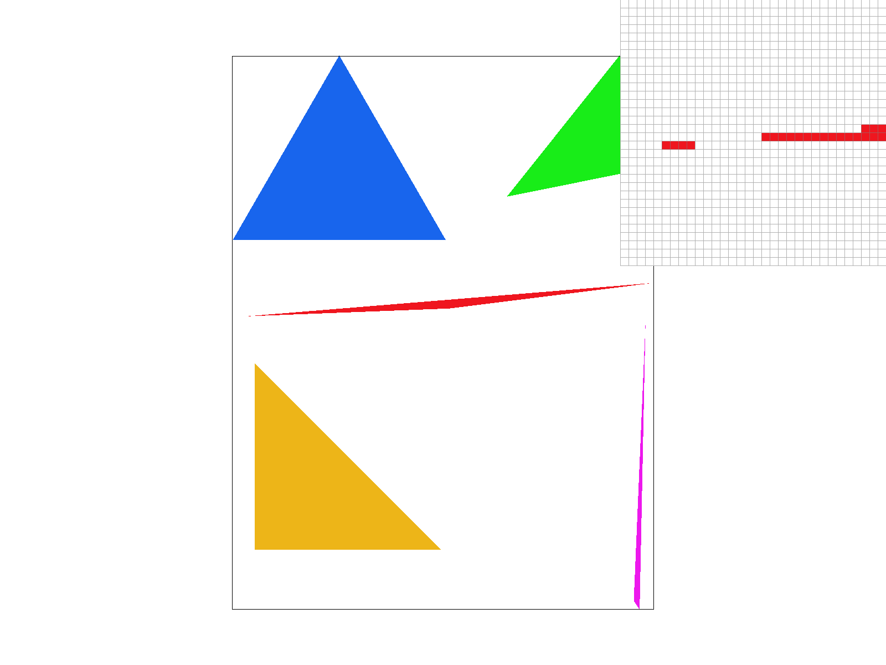
basic/test4.svg at the default view, one sample per pixel. The pixel inspector is centered on the thin right tip
of the red triangle. Because the triangle is narrower than a pixel there, most pixel centers fall outside it, so it breaks into
disconnected fragments with gaps between them instead of a continuous sliver (the magenta sliver's detached top tip shows the
same effect). This aliasing comes from taking only one sample per pixel; Task 2's supersampling addresses it.
I kept the basic version behind a compile-time switch (#define FAST_RASTER) so the two could be timed against each other.
The optimized version makes four changes:
double, because adding repeatedly in
float accumulated enough rounding error to flip a few pixels exactly on edges.
Timings were measured with std::chrono::high_resolution_clock around svg.draw() in
DrawRend::redraw(), averaged over 9–14 redraws each (pressing space to redraw), at the same window size (1514 × 1762) and the default zoom.
| Test | Basic (ms) | Optimized (ms) | Speedup |
|---|---|---|---|
| basic/test3.svg | 11.46 | 8.22 | 1.39× |
| basic/test4.svg | 0.76 | 0.55 | 1.37× |
| basic/test6.svg | 1.36 | 0.91 | 1.49× |
The optimized rasterizer was about 1.4–1.5× faster on every test. test3.svg (the dragon) is by far the most
expensive scene because its large polygon is triangulated into many triangles covering a lot of pixels, so it saves the most absolute time
(about 3.2 ms per frame). The speedup is moderate rather than dramatic, likely because each covered pixel still costs a call to
fill_pixel() and a memory write, which the optimizations do not remove. The optimized test3 timings were also
noisier than the others (individual redraws ranged from 7.2 to 10.0 ms), so its speedup is somewhat less precise.
Supersampling tests several points inside each pixel instead of one, then sets the pixel to the average of the results. With a sample rate of \(N\), I use an \(n \times n\) grid of samples per pixel, where \(n = \sqrt{N}\). A useful way to picture it is as rendering a temporary image that is \(n\) times wider and taller than the screen, then shrinking it back down.
Data structure. All samples live in sample_buffer, a std::vector<Color> with
one entry per sample, so it holds \(\text{width} \times \text{height} \times N\) colors. The samples of each pixel are stored
contiguously: sample \((i, j)\) of pixel \((x, y)\) is at index
\[ (y \cdot \text{width} + x) \cdot N + j \cdot n + i. \]
Keeping a pixel's samples next to each other makes the final averaging step a simple walk over consecutive memory.
set_sample_rate, set_framebuffer_target): the buffer is resized to
\(\text{width} \times \text{height} \times N\) whenever the window size or the sample rate changes.
clear_buffers already reset every entry to white at the start of each frame, so it needed no change.rasterize_triangle): instead of testing one point per pixel, I test every sample in the
triangle's bounding box. Sample \((i, j)\) of pixel \((x, y)\) sits at the center of its sub-cell,
\[ \left(x + \tfrac{i + 0.5}{n},\ \ y + \tfrac{j + 0.5}{n}\right), \]
using the same three edge tests as Task 1. A covered sample gets the triangle's color; the others are left alone.
My optimized rasterizer from Task 1 carries over directly: it now steps across rows of samples, adding
\(A/n\) instead of \(A\) per step.fill_pixel): these are not antialiased, so fill_pixel writes the same
color into all \(N\) samples of the pixel. The pixel then averages back to exactly that color, which keeps lines such as the
black border in test4.svg crisp.resolve_to_framebuffer): after everything is drawn, each pixel's \(N\) samples are averaged
(a box filter), clamped to \([0, 1]\), and rounded to the 8-bit values the display expects.Why this antialiases. With one sample per pixel, an edge pixel is either fully colored or not at all, which produces jagged staircases and makes thin shapes break apart. With \(N\) samples, the pixel's final color is proportional to the fraction of samples the triangle covers, which approximates how much of the pixel's area the triangle actually covers. Edges therefore fade smoothly between colors. In signal-processing terms, averaging over the pixel is a low-pass filter that removes the high-frequency detail a single sample cannot represent, before it can alias.
basic/test4.svg|
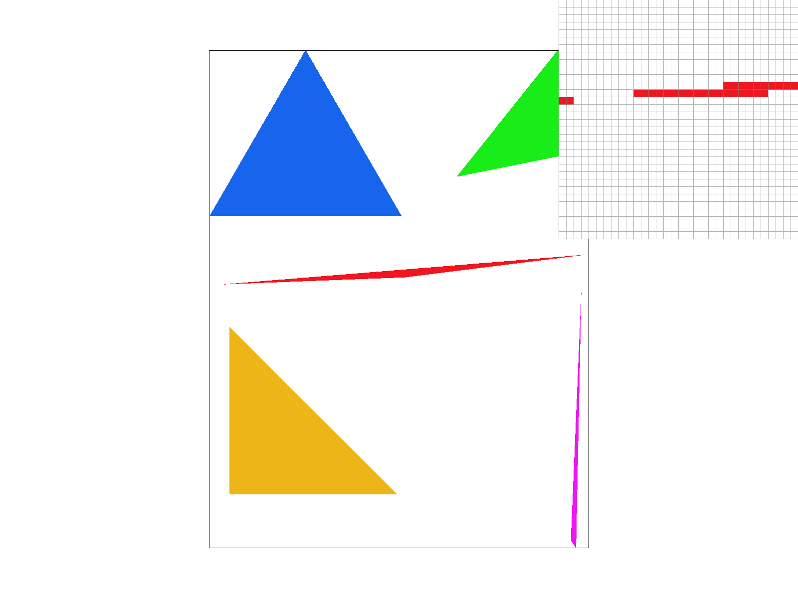 |
|
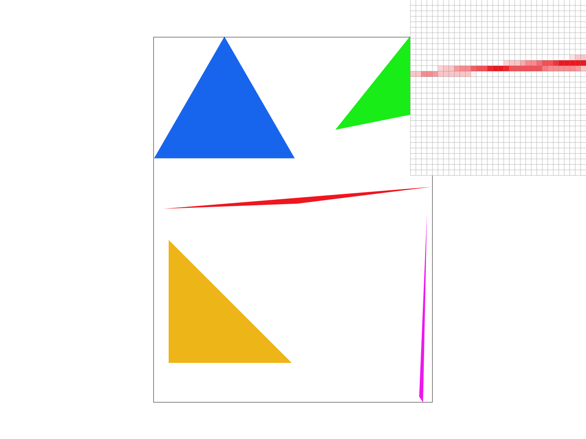 |
All three use the default view, with the pixel inspector on the same spot: the thin right tip of the red triangle.
The cost is time and memory, both of which grow linearly with the sample rate. In my timings, drawing test4.svg
took about 0.5 ms at rate 1 and about 8.6 ms at rate 16, and the sample buffer at 16× holds 16 times as many colors as the screen has pixels.
Grid supersampling still places samples in a perfectly regular pattern, just a finer one. Any detail that is regular and finer than the sample spacing can still alias, and because the samples are regular, the error shows up as structured, repeating patterns that look like real features. Jittered sampling breaks that regularity: each sample is placed at a random point inside its \(1/n \times 1/n\) sub-cell instead of at the sub-cell's center. The error is still there, but it becomes unstructured noise, which the eye finds much less objectionable than false patterns.
Implementation. I added a compile-time switch, JITTER_SAMPLING. The random offset for each sample comes from a
small integer hash of the sample's position in the high-resolution grid, not from a random number generator. This matters for two
reasons. First, two triangles that share an edge test exactly the same sample points, so there are no cracks or double-covered
samples along shared edges. Second, the pattern is identical every time the frame is redrawn, so the image does not flicker.
Because jittered samples are no longer evenly spaced, the incremental stepping and early row exit from my optimized rasterizer do
not apply, so this path evaluates the edge functions directly for every sample.
Test scene. To show the difference, I made svg/jitter_fan.svg: 120 thin black wedges meeting at the center of a
circle. Toward the center, the wedges become narrower than the sample spacing, which is exactly where grid sampling fails.
|
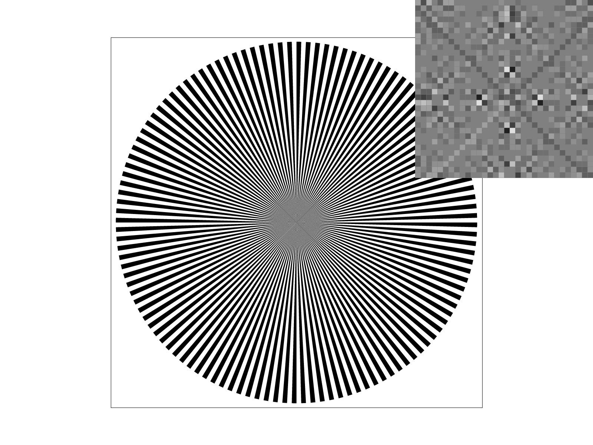 |
|
Both images use the default view at 16 samples per pixel, with the pixel inspector over the center of the fan. With the grid, the inspector shows clear artificial structure: a diagonal X shape and symmetric pairs of bright and dark pixels that do not exist in the scene. They come from the regular sample grid lining up with the regular wedges. With jitter, that structure is gone and the center becomes fine grain around a uniform gray, which is closer to the true average of the black and white wedges. Away from the center, where the wedges are wide, the two methods give nearly identical results. Jitter does not remove the error; it trades structured aliasing for noise.
All three transforms are \(3 \times 3\) matrices acting on homogeneous coordinates, where a 2D point \((x, y)\) is treated as
\((x, y, 1)\). The extra coordinate is what lets translation, normally an addition, be written as a matrix multiplication, so
any chain of transforms can be combined into a single matrix.
\[
\text{translate}(d_x, d_y) = \begin{bmatrix} 1 & 0 & d_x \\ 0 & 1 & d_y \\ 0 & 0 & 1 \end{bmatrix}, \quad
\text{scale}(s_x, s_y) = \begin{bmatrix} s_x & 0 & 0 \\ 0 & s_y & 0 \\ 0 & 0 & 1 \end{bmatrix}, \quad
\text{rotate}(\theta) = \begin{bmatrix} \cos\theta & -\sin\theta & 0 \\ \sin\theta & \cos\theta & 0 \\ 0 & 0 & 1 \end{bmatrix}
\]
rotate converts its angle from degrees to radians first. The rotation matrix follows the SVG specification; because
the screen's \(y\) axis points down, a positive angle turns shapes clockwise on screen, which matches how browsers draw SVG.
With these in place, svg/transforms/robot.svg renders like the reference image.
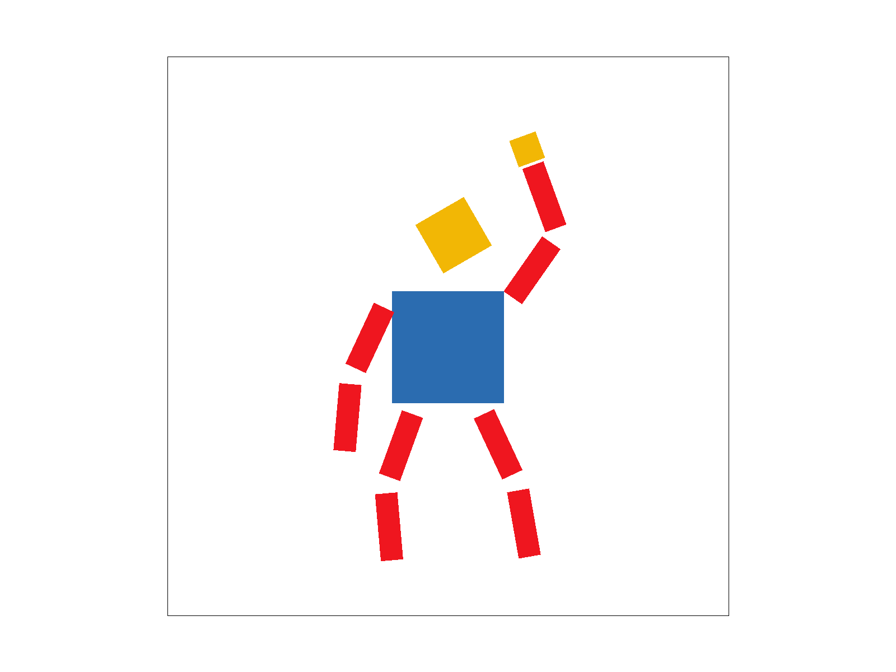
my_robot.svg, rendered with default viewing parameters.
I wanted cubeman to look like he is walking along and waving hello to someone. His right arm is raised with the elbow bent so the forearm points up, ending in a gold hand; his left arm hangs relaxed and slightly back; and his legs are mid-stride, one stepping forward and one pushing off behind, with both knees slightly bent. I also changed his colors (blue torso, gold head and hand) and tilted his head toward the waving hand.
The original robot places every body part with only translations and scales, so none of its limbs can bend. To pose him, I rebuilt each limb as a hierarchy of joints. For the waving arm:
translate to the shoulder, then rotate(-55) (raises the whole arm)
upper arm
translate to the elbow, then rotate(-55) (bends the forearm further up)
forearm
hand
Each group is nested inside its parent, so its transform is applied on top of the parent's. Rotating at the shoulder therefore
carries the elbow, forearm, and hand along with it, and the elbow rotation only bends the part of the arm below it, exactly like a
real joint. The legs work the same way, with a rotation at each hip and a smaller one at each knee. Every segment is still the same
unit square from the original file, stretched into shape with scale.
svg/transforms/robot.svg with the viewport rotated 45° clockwise (three presses of ]).
I added two keys to the GUI that rotate the whole view about the center of the window: ] rotates 15° clockwise
and [ rotates 15° counterclockwise. Pressing space resets the rotation along with the rest of the
view, and the current angle is shown in the on-screen info text.
How the matrix stack changed. Every point in an SVG reaches the screen through two matrices: svg_to_ndc,
which chooses the visible region of the SVG and maps it into normalized device coordinates (the unit square \([0,1]^2\)), and
ndc_to_screen, which stretches that square to the window's pixels. I inserted a rotation between them, in NDC space:
\[
p_{\text{screen}} = \mathtt{ndc\_to\_screen} \cdot R \cdot \mathtt{svg\_to\_ndc} \cdot p_{\text{svg}}, \qquad
R = \text{translate}(0.5, 0.5) \cdot \text{rotate}(\theta) \cdot \text{translate}(-0.5, -0.5).
\]
Rotating directly would spin the image around NDC's origin, the top-left corner of the window. Translating the center
\((0.5, 0.5)\) to the origin, rotating, and translating back makes it spin around the middle of the window instead. Placing \(R\) in
NDC space means it composes cleanly with panning and zooming, which live in svg_to_ndc, and with window resizing,
which lives in ndc_to_screen; and because ndc_to_screen scales both axes equally, the rotated image is not distorted.
The same combined matrix is used for the canvas border, so it rotates together with the drawing.
Two smaller details: each SVG file keeps its own rotation angle, so switching files with the number keys does not carry the rotation over; and mouse dragging still pans in the direction the mouse moves, because I rotate each drag by \(-\theta\) to convert it from screen directions back into SVG directions before panning.
Barycentric coordinates describe any point \(p\) inside a triangle as a weighted mix of the triangle's three corners: \[ p = \alpha P_0 + \beta P_1 + \gamma P_2, \qquad \alpha + \beta + \gamma = 1. \] Each weight says how strongly the point "belongs" to one corner. \(\alpha\) is 1 exactly at \(P_0\), falls off steadily as you move away, and reaches 0 along the edge opposite \(P_0\); \(\beta\) and \(\gamma\) behave the same way for \(P_1\) and \(P_2\). At the center of the triangle all three are \(1/3\). If any weight is negative, the point is outside the triangle.
Once a point has these weights, anything defined at the corners can be blended across the triangle the same way. For color: \[ c(p) = \alpha\, c_0 + \beta\, c_1 + \gamma\, c_2. \] A useful way to picture it: \(\alpha\) is the fraction of the triangle's area taken up by the smaller triangle formed by \(p\) and the two other corners. As \(p\) slides toward \(P_0\), that smaller triangle grows to fill the whole triangle and \(\alpha\) approaches 1.
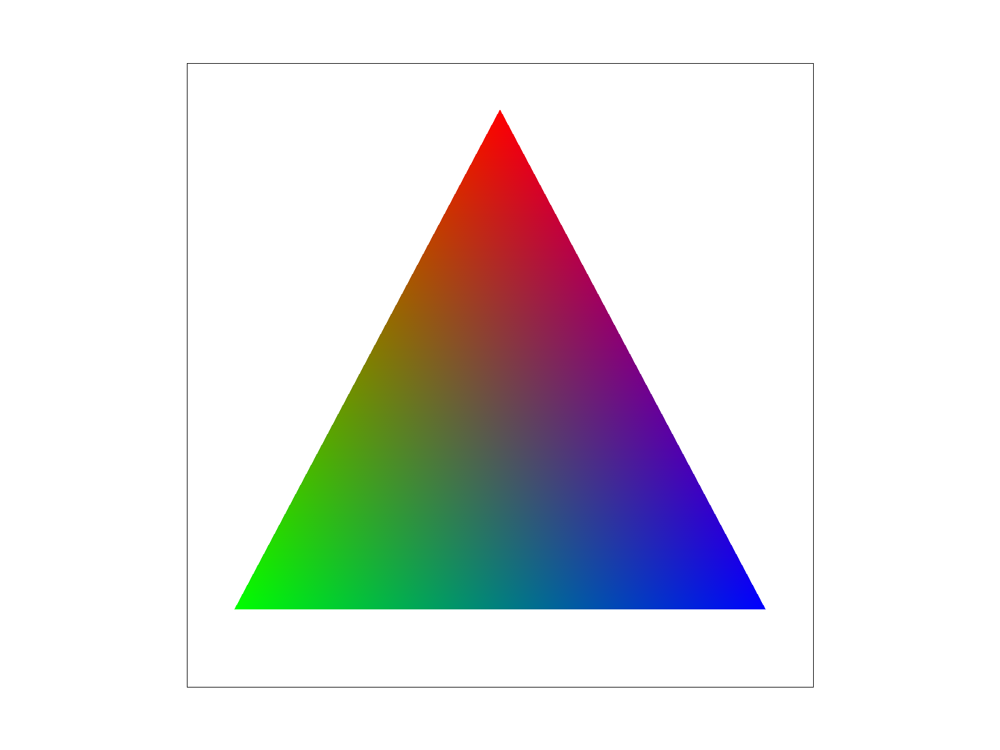
svg/basic/rgb_triangle.svg, which I made for this).
Each pixel's color is its barycentric weights applied to the three corner colors.
This image shows the weights directly, because each one controls a single color channel. How red a pixel is is its \(\alpha\), how green it is is its \(\beta\), and how blue it is is its \(\gamma\). The corners are pure red, green, and blue because one weight is 1 there. Along each edge, only the two colors at that edge's ends mix (for example, green and blue along the bottom edge give teal), because the weight of the opposite corner is 0 on that edge. In the middle, all three weights are about \(1/3\), which gives the grayish blend.
I compute the weights with the same edge functions I use for inside testing in Task 1. The edge function of the edge
\(P_1 \to P_2\) is 0 along that edge and grows linearly toward \(P_0\), which is exactly how \(\alpha\) behaves, just unnormalized.
Dividing by its value at \(P_0\) normalizes it:
\[
\alpha = \frac{L_{12}(p)}{L_{12}(P_0)}, \qquad \beta = \frac{L_{20}(p)}{L_{20}(P_1)}, \qquad \gamma = 1 - \alpha - \beta.
\]
A sample is inside the triangle when \(\alpha, \beta, \gamma \geq 0\), so the weights double as the inside test. Dividing by the
value at the corner also cancels the sign that depends on winding order, so clockwise and counter-clockwise triangles work without
a special case. The two denominators are computed once per triangle, and a zero-area triangle is skipped. The function uses the
same bounding box and supersample grid as rasterize_triangle, so color-interpolated triangles are antialiased by
Task 2's supersampling too.
svg/basic/test7.svg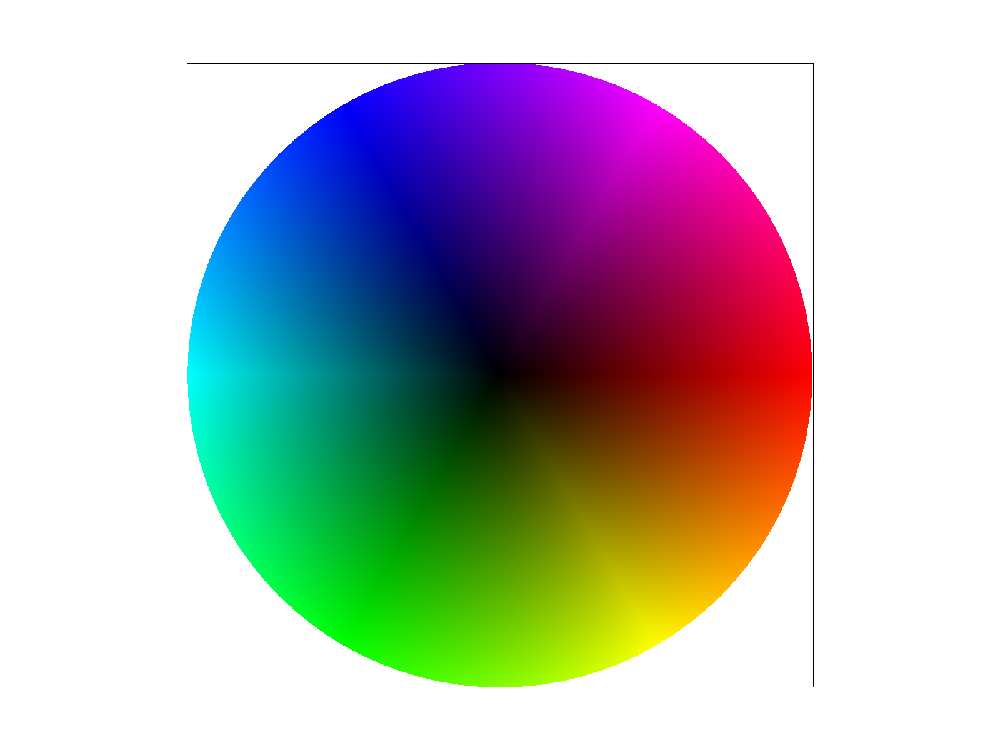
svg/basic/test7.svg with default viewing parameters and sample rate 1.The color wheel is a fan of thin triangles, each with a black vertex at the center and two fully saturated colors on the rim. Barycentric interpolation blends from black at the center to full brightness at the edge and between neighboring hues around the rim. You can see faint straight "spokes" where neighboring triangles meet: interpolation is linear within each triangle, so the rate at which the color changes can jump slightly when crossing into the next triangle.
Texture mapping paints an image (the texture) onto a triangle. Each vertex of the triangle carries a texture coordinate \((u, v) \in [0,1]^2\) saying which point of the texture it should show. For every sample point on screen, I use the barycentric weights from Task 4 to blend the three vertices' texture coordinates: \[ (u, v) = \alpha\,(u_0, v_0) + \beta\,(u_1, v_1) + \gamma\,(u_2, v_2). \] That gives a location in the texture, and the question pixel sampling answers is: what color should be read from the texture at that location? The texture is itself a grid of discrete pixels (texels), and \((u, v)\) almost never lands exactly on one, so we need a rule for turning a continuous position into a color.
Texture::sample_nearest) scales \((u, v)\) by the texture's width and height and returns
the single texel that contains the point. It is fast, but each screen pixel gets exactly one texel's color, so colors jump
abruptly from one texel to the next.Texture::sample_bilinear) finds the four texels whose centers surround the point and
blends them according to how close the point is to each: two linear interpolations horizontally, then one vertically between those
results. Colors change smoothly between texels, at the cost of reading four texels instead of one.
Implementation. rasterize_textured_triangle uses the same bounding box, supersample grid, and barycentric inside
test as my Task 4 function, but interpolates texture coordinates instead of colors, then looks up the texture with nearest or bilinear
sampling depending on the psm setting (toggled with the P key). For Task 5 it always sampled the
full-resolution texture (mip level 0); in Task 6 this lookup is replaced by a call to tex.sample, which also chooses a
mip level. With L_ZERO selected (the default), the behavior is exactly the Task 5 behavior shown below. In the texture, texel \((t_x, t_y)\) covers the square
\([t_x, t_x+1) \times [t_y, t_y+1)\), so its center is at \((t_x + 0.5,\ t_y + 0.5)\). Nearest sampling takes the floor of the scaled
coordinate; bilinear sampling subtracts 0.5 first so that it blends between texel centers. Both clamp to the texture's
border, so samples on or just past the edge stay valid.
|
|
|
|
|
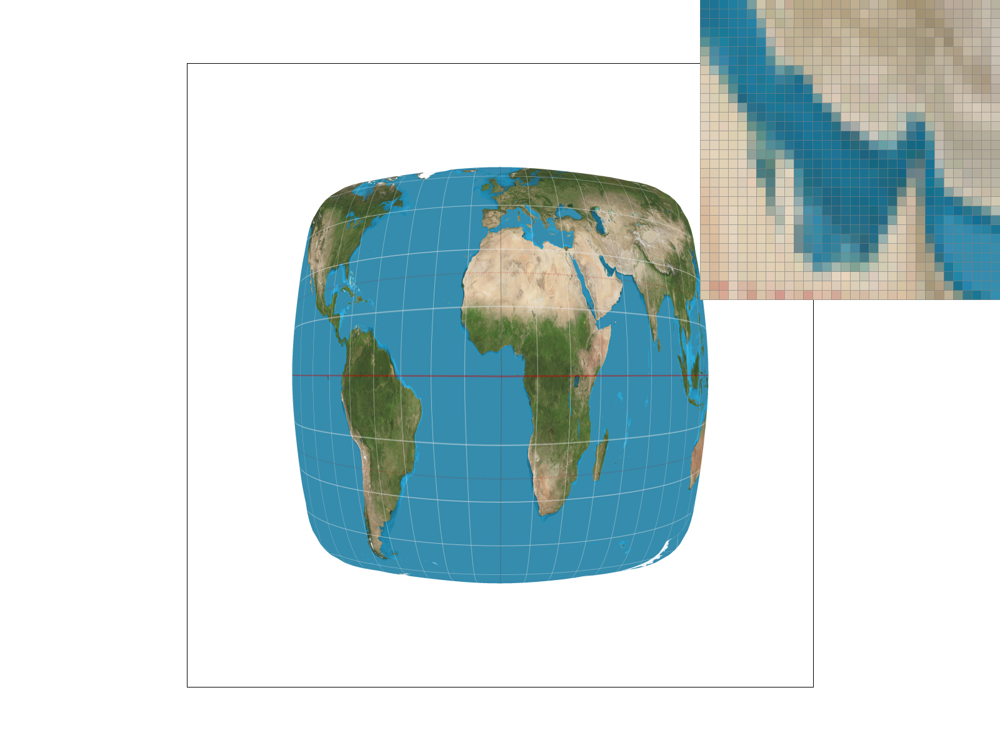 |
All four show svg/texmap/test1.svg at the default view. The pixel inspector is on a narrow strip of sea along the desert
coast near the Arabian Peninsula, where the dotted red Tropic of Cancer line crosses.
When the difference is large. The two methods differ the most when the texture has sharp, high-contrast detail near the size of a single texel, such as thin lines, text, or hard coastlines, and when each screen pixel takes only one sample. There are two situations where this happens:
When the texture varies slowly, like the open ocean in this image, neighboring texels are nearly the same color and both methods give almost identical results. The difference also shrinks at high sample rates, because supersampling averages many lookups per pixel, which blurs away the same discontinuities that bilinear sampling smooths. Neither method helps much when the texture is heavily shrunk (many texels per pixel), because both still only look at one small neighborhood of texels; that is the problem Task 6's mipmaps address.
Pixel sampling (Task 5) decides how to read a color near one point of the texture. That is enough when the texture is shown at about its own size or larger. But when a texture is shrunk on screen, one pixel covers many texels, and reading just one or four of them picks an essentially random texel from that region. Small shifts change which texel gets picked, so fine detail turns into noise, moiré, and broken lines: aliasing again, this time inside the texture.
A mipmap fixes this by precomputing smaller versions of the texture: level 0 is full resolution, level 1 is half the width and height with each texel averaging a \(2 \times 2\) block, level 2 is a quarter, and so on. Level sampling means choosing, for each sample, the level whose texels are about the same size as the screen pixel, so a single lookup already represents the average over the pixel's whole footprint. Detail that is too small to show gets averaged away in advance instead of aliasing.
In rasterize_textured_triangle, for every sample I compute the barycentric-interpolated texture coordinates at the
sample \((x, y)\) and also at \((x+1, y)\) and \((x, y+1)\), one pixel to the right and one pixel down, and store them in a
SampleParams struct (p_uv, p_dx_uv, p_dy_uv) together with the current
psm and lsm. Then I call tex.sample(sp).
Texture::get_level subtracts to get how far the texture coordinates move per screen pixel, scales by the texture's
width and height to convert to texels, and computes
\[
L = \max\left( \left\| \left(\tfrac{du}{dx}, \tfrac{dv}{dx}\right) \right\|,\ \left\| \left(\tfrac{du}{dy}, \tfrac{dv}{dy}\right) \right\| \right),
\qquad D = \log_2 L.
\]
\(L\) is how many texels one pixel spans along its longer side. Since each mip level halves the resolution, level \(D\) has about
one texel per pixel. When \(L \le 1\) the texture is magnified, so I return level 0.
Texture::sample then uses the level according to lsm (the L key), and samples each level
with nearest or bilinear pixel sampling according to psm (the P key), so all six combinations work:
L_ZERO: always level 0, as in Task 5.L_NEAREST: rounds \(D\) to the nearest whole level and samples it.L_LINEAR: samples the two levels on either side of \(D\) and blends them by the fractional part of \(D\).
With bilinear pixel sampling, this is trilinear filtering: two bilinear lookups blended across levels, for 8 texels in total.
All levels are accessed by reference, never copied. One quirk of the starter code: generate_mips allocates the final
\(1 \times 1\) level but never fills it in, so it stays black. I clamp the level to the last level that holds data, so textures seen
from extremely far away do not turn black.
| Technique | Speed | Memory | Antialiasing power |
|---|---|---|---|
| Pixel sampling (nearest vs. bilinear) |
Bilinear reads 4 texels instead of 1 and does 3 blends; roughly 2× slower in my timings. | No extra memory. | Smooths blockiness when the texture is magnified and softens thin features, but only looks at a \(2 \times 2\) neighborhood, so it cannot fix aliasing when the texture is shrunk a lot. |
| Level sampling (level 0 vs. nearest level vs. level interpolation) |
Costs extra work per sample: two more uv interpolations and a \(\log_2\); level interpolation also doubles the lookups. Mipmaps are built once when the texture loads. | The mipmap adds about \(1/3\) to the texture's memory (\(1/4 + 1/16 + \dots\)). | Very effective for shrunk textures: each lookup already averages the pixel's footprint. Nearest level can show visible seams where the level jumps; level interpolation removes them. It can over-blur, because it uses the footprint's longer side in both directions. |
| Samples per pixel (supersampling, Task 2) |
Slowest: all the work scales with the sample rate, so 16 samples is roughly 16× the work. | Also scales with the sample rate: the sample buffer holds one color per sample, 16× the framebuffer at rate 16. | The most general: it antialiases triangle edges as well as textures. But for textures it is brute force, and it only helps as far as its rate reaches. |
My texture, bricks.png, is a \(1024 \times 1024\) red brick wall with thin 2-texel mortar lines and a fine speckle on
each brick. I tiled it \(4 \times 4\) across the canvas in svg/texmap/bricks.svg, so it is shrunk about \(4\times\) at
the default view. Thin, regular lines like the mortar are exactly the kind of detail that aliases badly when shrunk.
|
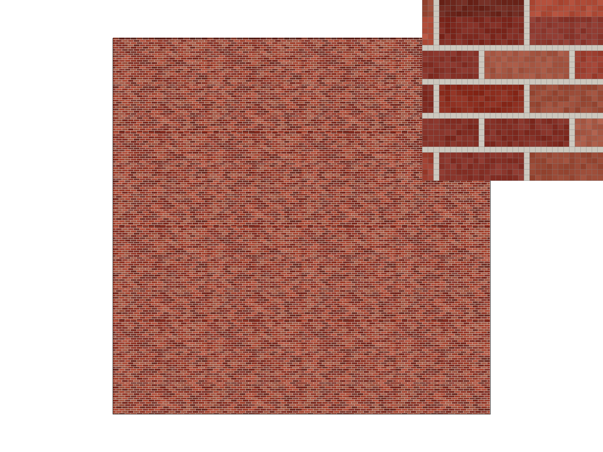 L_ZERO + P_NEAREST |
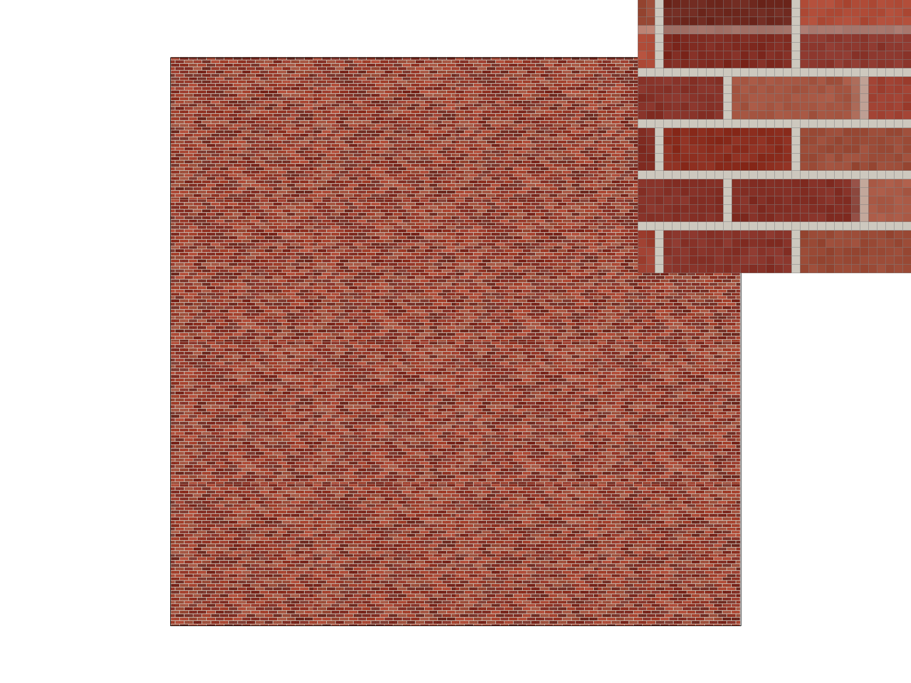 L_ZERO + P_LINEAR |
|
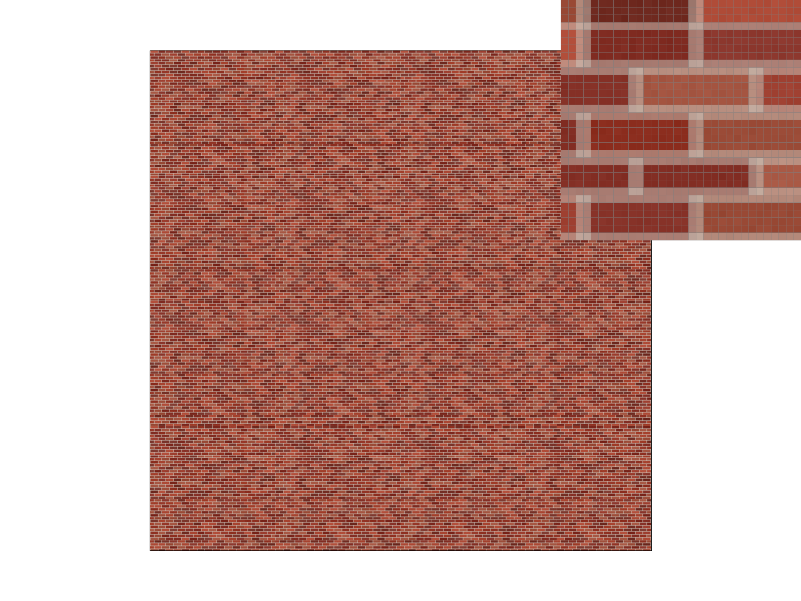 L_NEAREST + P_NEAREST |
L_NEAREST + P_LINEAR |
On this image the difference is subtle, and it shows the core tradeoff of level sampling: level 0 looks sharper, but its sharpness is wrong, because it comes from arbitrarily picking one texel per pixel, which produces the patchy moiré. Mipmapping gives up that false crispness for a softer image that correctly represents what each pixel covers. Level sampling matters much more than pixel sampling here, because the problem is that the texture is shrunk; pixel sampling only refines the result. In my timings for this scene, level 0 + nearest took about 15 ms per frame, level 0 + bilinear about 34 ms, nearest level + nearest about 25 ms, and nearest level + bilinear about 52 ms.
Mipmapping chooses a level from the footprint's longer side and applies it in both directions. That is fine when a pixel covers a roughly square patch of texture, but on a surface seen at a grazing angle, like a floor stretching away, a pixel covers a long, thin strip. Choosing the level from the long side blurs the short direction far more than necessary, so distant surfaces smear into a flat color.
I added a fourth level sampling mode, L_ANISO, which comes after level interpolation when cycling with the
L key. It measures both sides of the footprint, \(L_{\max}\) and \(L_{\min}\), and takes
\(N = \lceil L_{\max} / L_{\min} \rceil\) samples (at most 16) spread evenly along the long side. Each of these only needs to cover
\(L_{\max} / N\) texels, so it uses the much sharper level \(\log_2(L_{\max}/N)\) with trilinear filtering, and the \(N\) results are
averaged. When the footprint is square, \(N = 1\) and this is the same as trilinear. To show the effect, I made
svg/texmap/bricks_floor.svg, which lays the brick texture on a floor receding into the distance.
|
|
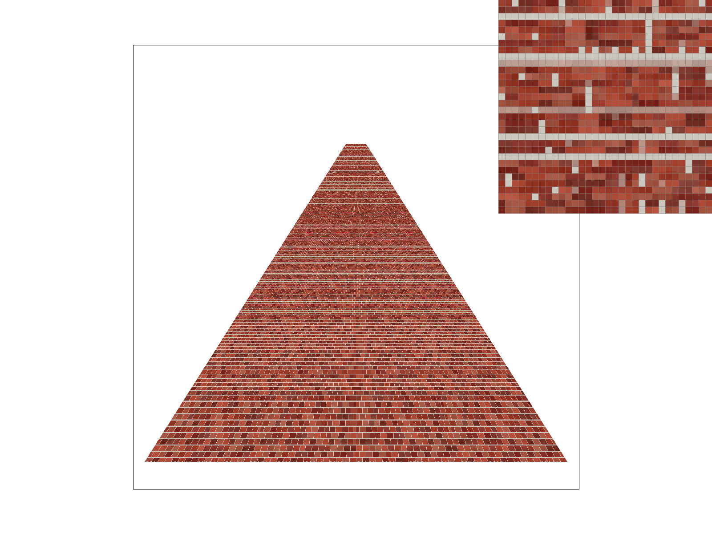 |
|
|
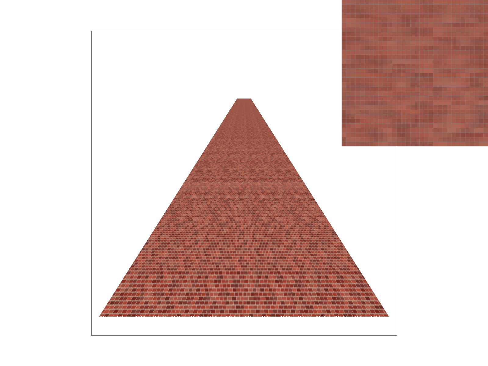 |
Performance, measured with the std::chrono timer around svg.draw() and averaged over several redraws of
this scene at the same window size and view:
| Method | Time per frame | Relative to nearest |
|---|---|---|
| Nearest | 7.8 ms | 1.0× |
| Bilinear | 14.8 ms | 1.9× |
| Trilinear | 20.5 ms | 2.6× |
| Anisotropic | 40.3 ms | 5.2× |
Anisotropic filtering costs about twice as much as trilinear here, because distant pixels take several trilinear lookups each. The cost grows with how squashed the footprints are, which is also exactly where it helps the most.
I did not attempt this optional task.